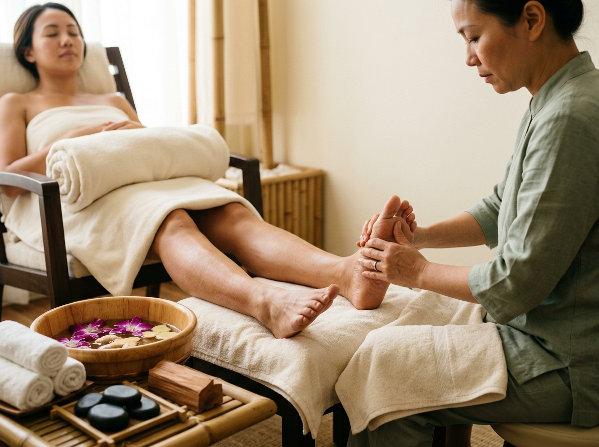
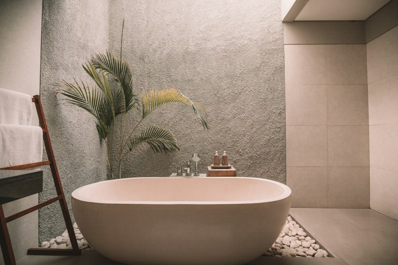
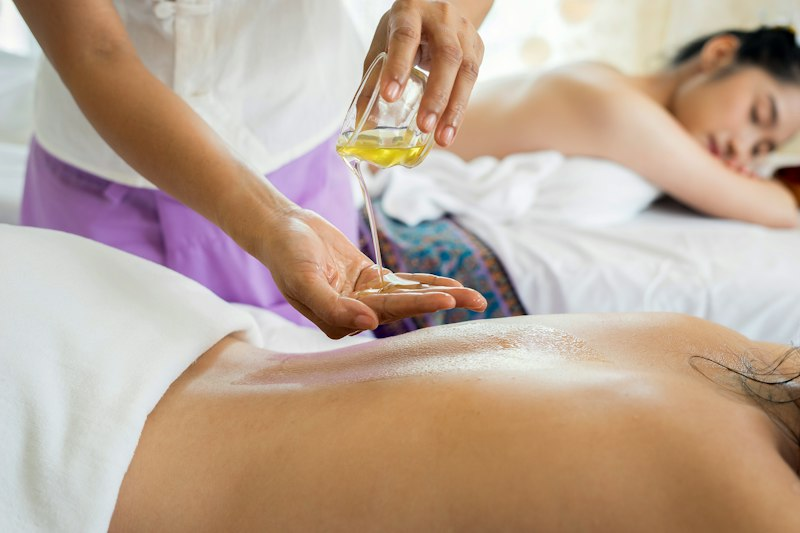

Restore Balance from Sole to Soul.
Immerse your senses in authentic Eastern foot reflexology, warm botanical herbal soaks, and targeted meridian acupressure. We gently stimulate over 7,200 nerve endings to relieve stress, enhance circulation, and restore deep systemic calm.

The Four Pillars of Meridian Wellness
In Traditional Chinese Medicine and reflexology, the feet are regarded as the second heart of the body. When proper pressure is applied to these sacred reflex gateways, vitality returns to every organ.
Nervous Reset
Shifts your body from chronic sympathetic "fight or flight" into deep parasympathetic restoration, dissipating accumulated stress.
Circulation & Lymph
Stimulates venous return and lymphatic drainage in the lower limbs, banishing heavy legs and swelling from long sitting or standing.
Plantar & Arch Relief
Decompresses rigid plantar fascia, calms calcaneal spur irritation, and restores natural arch elasticity and athletic spring.
Restful Sleep
Clears meridian blockages linked to nocturnal agitation, encouraging effortless transition into restorative delta-wave sleep.
The Sacred Map on the Soles of Your Feet
Every organ, gland, and nerve center has a corresponding reflex zone on the underside and sides of the feet. Click below to inspect key reflex zones and their physiological benefits:

Head, Brain & Pituitary Gland Zone
Tips of Big Toes and Toes 2-5
Releases mental stress, clarifies thought, alleviates tension headaches, and harmonizes melatonin sleep regulation cycles.
Signature Studio Rituals
 Signature
Signature
Classic Eastern Foot Reflexology
Traditional acupressure targeting meridian reflex zones on the soles, relieving systemic stress and restoring organ equilibrium.

Deep RelaxationBotanical Herbal Foot Massage
A soothing, rhythmic massage blending nourishing sesame and sweet almond oils with warm botanical towels and calf tension strokes.

Best ValueThe Studio Foot & Body Harmony
Our most popular combined ritual: 45 minutes of detailed eastern foot reflexology followed by 45 minutes of upper body acupressure.
A Haven of Peace & Sensory Stillness
Designed with natural teak wood, organic linen, bamboo acoustics, and subtle floral infusions to help your mind decompress the instant you step across our threshold.


Words from Restored Soles
Hear what our guests share after their reflexology journeys and foot revival sessions.
"I have suffered from chronic plantar fasciitis and lower back stiffness from nursing 12-hour shifts. After two sessions with Master Mei-Ling, I woke up without the usual morning heel ache. This studio is truly an oasis."
"The Studio Foot & Body Harmony package is the greatest 90 minutes of self-care in the city. The herbal foot soak with ginger and lemongrass instantly melted my workday tension. Unbelievable attention to detail."
"From the serene lighting and calming aroma to the immaculate hygiene standards, everything about Solace & Sole exudes pure peace. Kai Tanaka's pressure point work on my feet resolved months of persistent insomnia."
Frequently Asked Questions
Helpful answers to guide your first visit to our studio.
Give Your Feet the Healing Attention They Deserve
Reserve your preferred time slot online in under 2 minutes. Free cancellation up to 24 hours prior.